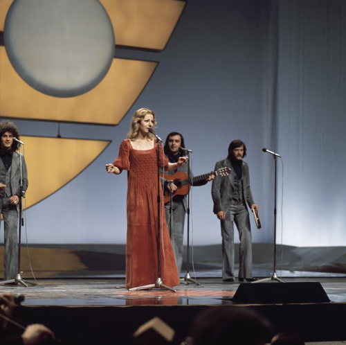
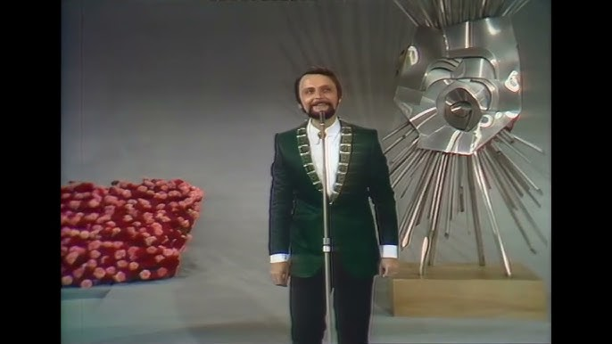

Extra Nena
Ljubim te pesmama
1992
Ljubim te pesmama
1992
Baby Doll
Brazil
1991
Brazil
1991
Tajči
Hajde da ludujemo
1990
Hajde da ludujemo
1990
Riva
Rock Me
1989
Rock Me
1989
Srebrna krila
Mangup
1988
Mangup
1988
Novi fosili
Ja sam za ples
1987
Ja sam za ples
1987
Doris
Željo moja
1986
Željo moja
1986
Ida and Vlado
Ciao, amore
1984
Ciao, amore
1984
Daniel
Džuli
1983
Džuli
1983
Aska
Halo, halo
1982
Halo, halo
1982
Seid Memić Vajta
Lejla
1981
Lejla
1981

Ambasadori
Ne mogu skriti svoju bol
1976
Ne mogu skriti svoju bol
1976
Pepel in kri
Dan ljubezni
1975
Dan ljubezni
1975
Korni Grupa
Generacija '42
1974
Generacija '42
1974
Zdravko Čolić
Gori vatrav
1973
Gori vatrav
1973
Tereza
Muzika i ti
1972
Muzika i ti
1972
Krunoslav Slabinac
Tvoj dječak je tužan
1971
Tvoj dječak je tužan
1971
Eva Sršen
Pridi, dala ti bom cvet
1970
Pridi, dala ti bom cvet
1970

IvanvPozdrav svijetu
1969
1969
Lući Kapurso and Hamo Hajdarhodžić
Jedan dan
1968
Jedan dan
1968
Lado Leskovar
Vse rože sveta
1967
Vse rože sveta
1967
Berta Ambrož
Brez besed
1966
Brez besed
1966
Vice Vukov
Čežnja
1965
Čežnja
1965
Sabahudin Kurt
Život je sklopio krug
1964
Život je sklopio krug
1964
Vice Vukov
Brodovi
1963
Brodovi
1963
Lola Novaković
Ne pali svetla u sumrak
1962
Ne pali svetla u sumrak
1962
Ljiljana Petrović
Neke davne zvezde
1961
Neke davne zvezde
1961